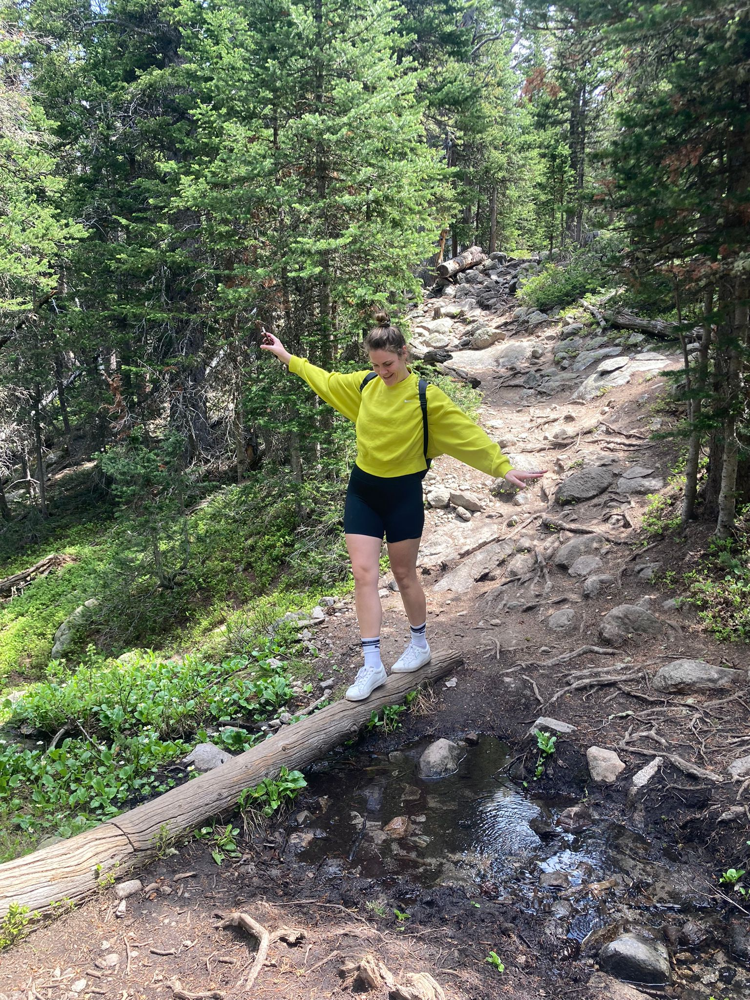
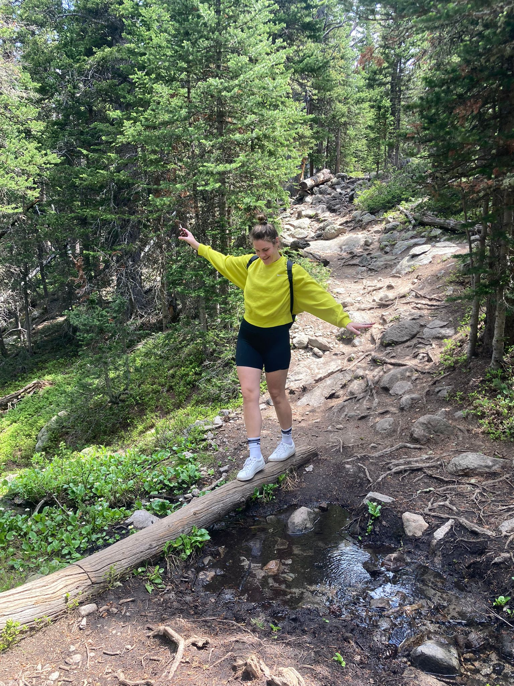

About me
After working in the fashion industry for more than 8 years in sales, management,
and product development I decided it was time for a change.
After a lot of reflection I realized what was really important to me was a job
that was fulfilling, and provided a flexible life. I began by studying some front-end
technologies in February of 2022.
I started studying with SheCodes learning HTML, CSS, JavaScript, and React. I built
some great projects including two weather apps, one using vanilla JavaScript,
and the other using React, as well as the start of this portfolio site.
Eventually I felt that the next step for me would be a Web Development bootcamp. Living in NYC at the
time I looked there first but I eventually decided to widen my search to bootcamps around
the world. Then I found Le Wagon, from there I did my research and settled on Berlin.
Part of the joy for me in doing this bootcamp meant the ability to truly learn to work in
team settings while coding. I was very lucky to work with people from all over the world.
The program focused on fullstack on a Rails framework. Within that Ruby, HTML, CSS/SCSS,
JavaScript, React, and Stimulus. I created two group projects with my team in Rails. One app
was a psuedo product exchange app (BookMe), the other a safety focused travel app for women
(SafeTravels).
For a life long learner, the journey never ends. In July of 2024 I decided to continue my tech education.
This time I wanted to take what I had learned in web development, and my many years in sales and find a way
to combine the two. The result: Data Analysis. Check out what I've been working on!
Check out what I've been working on!